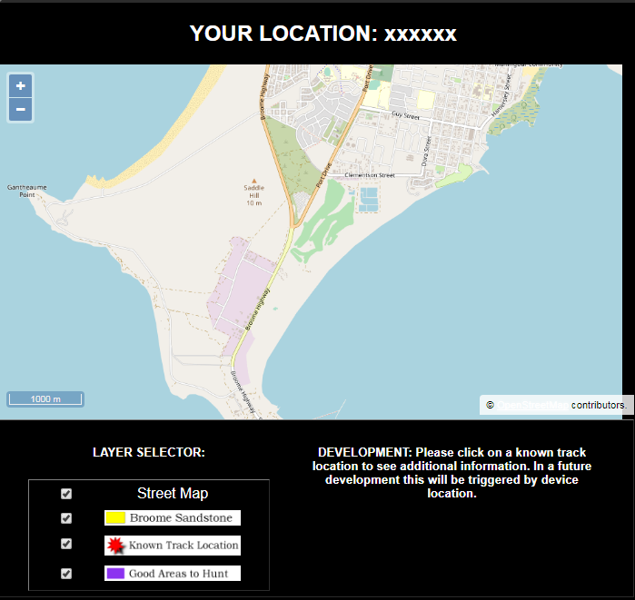

|
|
home | info | tides | map |
|---|
Hints to find dinosaur tracks, and rewards when you find them! Remember, they are only visible at very low tides… |
| Click Below to Go to the Map Page: |
|  |
| WARNING: Access to the intertidal zone can be dangerous. Please check current tide info by clicking on this link. |